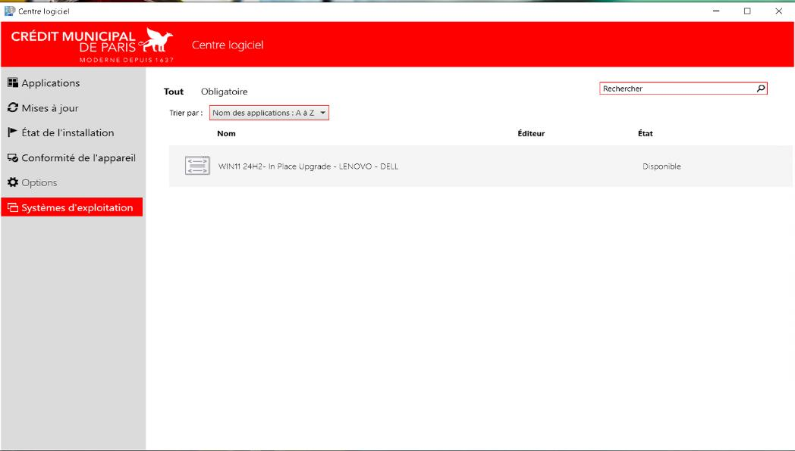
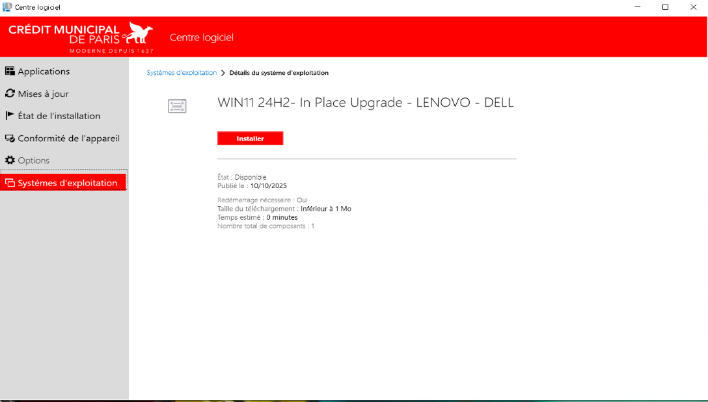

Étape 5 sur 6
Campagne de communication et relance
Amener tous les utilisateurs du parc compatible à la mise à niveau.
Contexte
La direction a informé l'ensemble du personnel. J'ai ensuite assuré le suivi opérationnel auprès des utilisateurs qui n'avaient pas encore lancé la mise à jour.
Objectifs
- Atteindre 100 % de migration sur le parc compatible.
- Lever les freins techniques par une assistance personnalisée.
- S'assurer que chaque poste dispose des derniers correctifs.
1. Constat
Le mail initial envoyé par mon responsable expliquait la procédure. Le fichier de suivi Excel montrait pourtant que plusieurs collaborateurs n'avaient pas démarré.
2. Relance téléphonique
- Contact individuel des personnes identifiées dans le fichier de suivi.
- Consigne : lancer la mise à jour le soir avant le départ, pour ne pas perdre de temps de travail.
- Contrôle : vérifier le bon fonctionnement le lendemain matin.
3. Assistance
Pour les utilisateurs en difficulté, un mail de suivi avec un guide simplifié en 3 étapes (vérification, installation, validation) et des explications pour rassurer sur la sécurité des données.
Défis et solutions
- Inaction : la relance téléphonique personnalisée a permis de rappeler l'enjeu de sécurité dans un contexte bancaire.
- Blocages à l'installation : le guide illustré a résolu la majorité des cas en autonomie.
Résultat
Mise à jour effective de la flotte compatible et baisse nette du nombre de postes vulnérables.
Captures


Annexes
Savoir-faire mobilisés
- Relation utilisateur
- Suivi de projet (Excel)
- Supports de communication simples